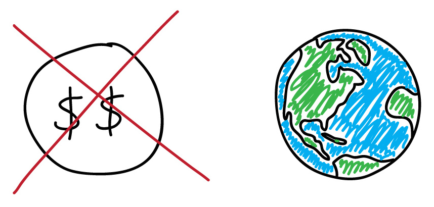

Yes, You Can Use Open Source
(And There's Help!)
Matt Davis
CC-BY-SA

http://penandpants.com
@jiffyclub
jiffyclub@gmail.com
Slides: http://j.mp/1yBlzW8


Urban Visualization and Analysis
Open Source Scientific Tools

Awesome
Not So Awesome

Master Builders


Lab skills for scientific computing
We save researchers a day a week
for the rest of their careers.
Unix shell
Git / GitHub
Python (or R)
SQL (sometimes)
=>
=>
=>
=>
task automation
tracking and sharing
modularization
structured data
Since January 2012
220 two-day workshops
234 instructors
6800 learners

...and many more